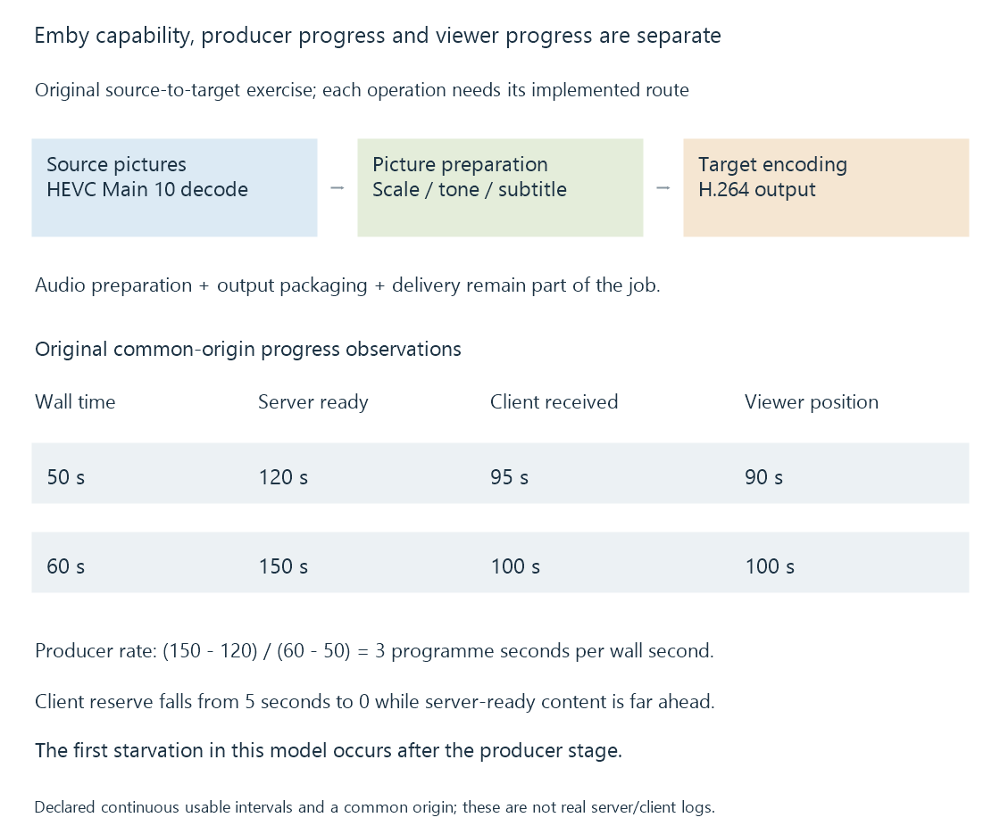

Hardware acceleration in Emby Server
Emby Server’s accelerated conversion uses supported selected decode, picture-processing and encode paths whose source/target, runtime and resource evidence establish the actual session route.
Emby Server uses a media-conversion route appropriate to the selected source, tracks, client and output constraints. Hardware acceleration can supply supported operations within that route.
Emby lists hardware-accelerated transcoding as an Emby Premiere feature. Feature availability, usable device/runtime capability and the actual session's work are separate conditions.
Establish whether the server needs new video
A Direct Play session uses the original representation. Enabling acceleration does not require the server to decode and re-encode video that the client can use directly.
A Direct Stream session can preserve video while adapting packaging or another stream. Audio conversion in that session is different from a newly encoded video representation.
When video conversion is required, the selected source decoder, picture operations and target encoder form the route.

Treat settings as selection input
The server's configured acceleration preferences and detected paths influence selection. They do not report that a given source profile and target were successfully initialized.
A device can support HEVC Main 10 reconstruction while another requested profile or filter needs another path. A target encoder has its own capability and resource requirements.
Emby's platform documentation supplies high-level route context. Some public lists and setup remarks reflect older versions, so the actual server build, available settings and current runtime result should accompany an investigation.
This page explains the technology and evidence, rather than prescribing one forced setting for every platform.
Work through a selected original session
Imagine an original source with 4K HEVC Main 10 video, AC-3 audio and a subtitle that the client cannot present separately. The target is 1080p H.264 SDR with stereo AAC.
| Requirement | Operation to establish |
|---|---|
| Source HEVC pictures | Supported selected decoder |
| Smaller SDR presentation | Appropriate scale/colour processing |
| Painted subtitle | Selected composition path |
| H.264 video output | Supported target encoder |
| Stereo AAC | Selected audio preparation |
| Streaming resources | Output packaging and delivery |
One route could use hardware reconstruction, CPU-specific picture work and hardware encoding. Another could use compatible device picture processing. The active route, not the enabled setting alone, establishes those handoffs.
The example does not claim a particular private Emby planning algorithm or captured session.
Distinguish availability, initialization and progress
| Observation | Stage it supports |
|---|---|
| Device/path appears as available | Detected or exposed selection context |
| Decoder/encoder configuration accepted | Successful initialization at that stage |
| Mapped/processed pictures become available | Picture-path progress |
| Encoded output advances | Producer progress through the selected target |
| Client presents the next interval | Later delivery and receiver progress |
A source/output codec label can appear in both copying and re-encoding scenarios. Stream-operation mappings identify the difference.
A process called transcoding can also perform packaging or other-stream adaptation. The name of the process is less specific than its actual selected operations.
Relate playback information and the relevant log
Playback information relates source properties, selected output and session observations. A conversion log records input, mappings, filters and progress in the relevant job context.
The public TranscodingInfo model includes decoder/encoder and hardware-related fields. Their interpretation belongs to that session and reporting stage, rather than a whole-server guarantee for every file.
Source codec/profile, dimensions, bit depth, selected tracks, target constraints and server/runtime versions help explain why a different path was selected.
Progress clocks can locate a later wait
Successful hardware initialization establishes the configured stage, while producer, receiver and viewer progress describe later boundaries.
Use an original common-origin programme-time model:
| Wall-clock observation | Server-ready position | Client-received position | Viewer position |
|---|---|---|---|
| 50 seconds | 120 seconds | 95 seconds | 90 seconds |
| 60 seconds | 150 seconds | 100 seconds | 100 seconds |
The producer advanced thirty media seconds in ten wall seconds, giving a modeled 3x rate over this interval. The client’s usable lead fell from five seconds to zero while the viewer advanced at 1x.
In this example, fast server output coexists with client starvation at the final boundary. A stall alone would not show that the hardware encoder stopped working.
The model stops at that first starvation point and assumes the received intervals are continuous and usable. A real record needs common timestamp origins and the actual readiness/receipt observations.
After a seek or a replaced conversion job, an output timestamp can have another origin. Relating a new log's zero to the programme position is necessary before comparing its progress with the viewer’s current time.
Change one relevant input in a reproduction
A useful original comparison is:
| Case | Preserved context | Changed input |
|---|---|---|
| A | Source, client, target limit, programme interval | Baseline track selection |
| B | Same as A | Subtitle requiring another processing path |
| C | Same as A | A source variant with another encoded profile |
B can change picture processing while leaving decoder support intact. C can change reconstruction requirements while keeping the title the same.
See Also
- How to read a hardware codec support matrix
- Driver-dependent media capabilities
- Mixed hardware and software filtering
- Why hardware acceleration can still use the CPU
- Reading Emby playback information
- Reading a transcoding log